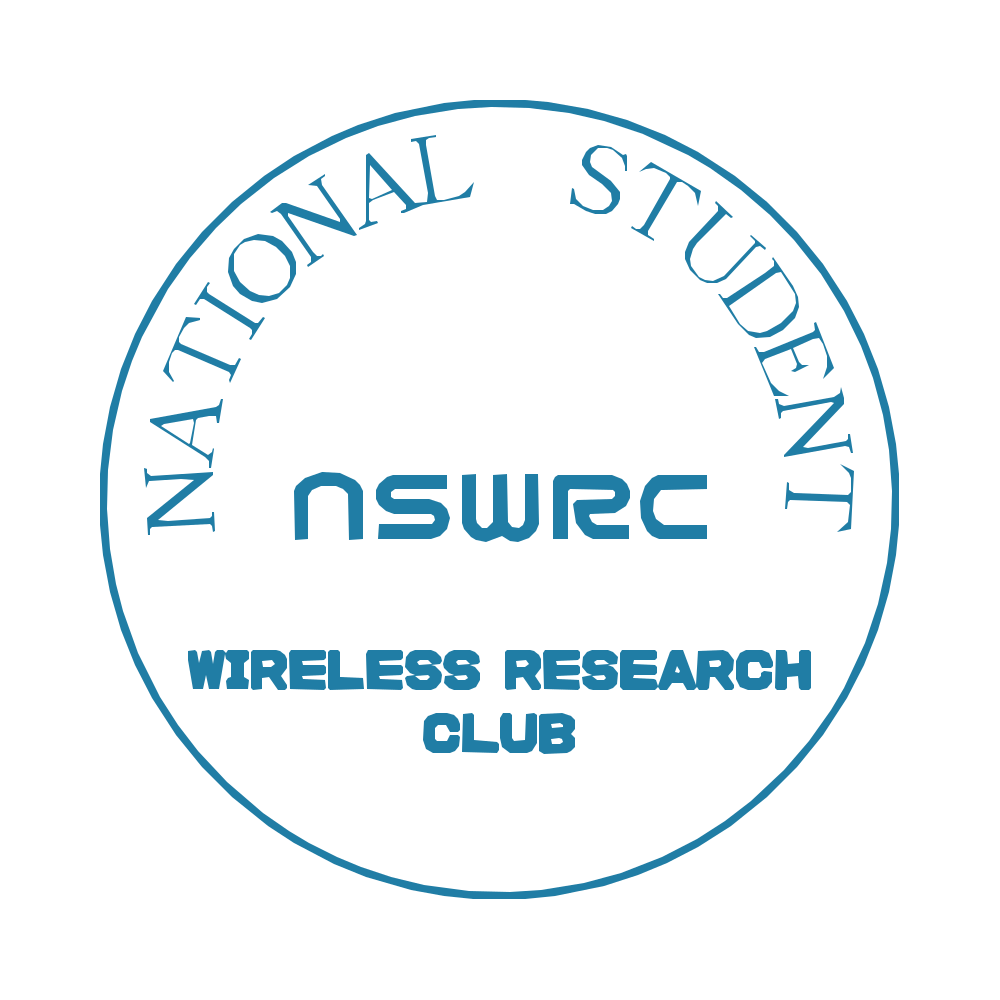

学生局の交信・情報交換
学生無線局同士の交信を通じて、活動状況や運用情報を共有します。

NATIONAL STUDENT WIRELESS RESEARCH CLUB
CONNECTING STUDENTS THROUGH RADIO
全国学生無線通信研究会
学校や地域の枠を越えて、学生無線家が交流し、知識や経験を共有する。
全国の学生による無線通信活動を支えるネットワークです。
OUR PURPOSE
交流・技術・協力
学生無線家同士のつながりを育て、個々の活動と学びを全国へ広げます。
STUDENT WIRELESS COMMUNITY IN JAPAN
ABOUT US
全国学生無線通信研究会は、無線通信に関心を持つ学生が、所属する学校や地域を越えて交流するためのネットワークです。
日々の無線運用から技術研究、電子工作、イベントの企画まで。それぞれの経験や知識を共有し、学生ならではの活動を広げていくことを目指しています。
学生が中心となり、主体的に活動を企画・運営します。
学校や地域の違いを越えて、情報や経験を共有します。
無線通信に関する知識や技術を学び合います。
ACTIVITIES
交流と技術活動を通じて、
学生無線家のネットワークを広げます。
学生無線局同士の交信を通じて、活動状況や運用情報を共有します。
学校や地域を越えた交流の機会を設け、共同での無線運用やイベントに取り組みます。
無線通信、アンテナ、電子工作などに関する技術や研究成果を共有します。
各地の学生や団体の活動をつなぎ、継続的な協力関係の構築を目指します。
OUR POLICY
経験や所属にかかわらず、学生が互いに学び合える関係を大切にします。
実際の運用やものづくりを通じて、無線通信への理解を深めます。
個々の活動を尊重しながら、団体間の連携と協力を進めます。
LATEST NEWS
お知らせを読み込んでいます。
JOIN THE NETWORK
個人での交流、学校・団体同士の連携、イベントへの参加など、参加方法の概要をご案内します。
参加・入会案内を見る ›